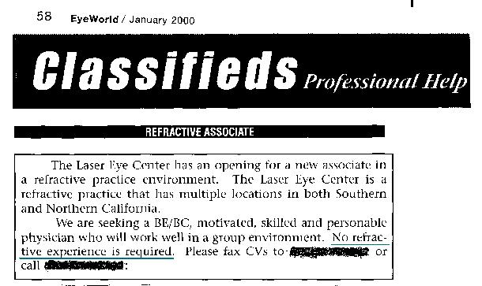

К сожалению, закон не требует, чтобы врачи, проводящие LASIK, имели какой-либо опыт работы под наблюдением или даже были офтальмологами. Ознакомьтесь с приведенным ниже объявлением о приеме на работу. Некоторые хирурги начинают проводить LASIK после всего лишь курса выходного дня.
